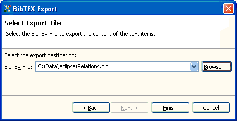

The BibTEX export allows you to export the content of all your text items to a BibTEX file. Thus, you can use Relations as bibliography database and late on embed this information into your articles writen with TEX or LaTEX using the BibTEX export.
Start the Export... wizard from the Data menu and select BibTEX export. The dialog page displayed after allows you to enter the BibTEX file where the content of the text items is exported.

BibTEX export wizard.
Note: The BibTEX export allows you to overwrite existing BibTEX files.